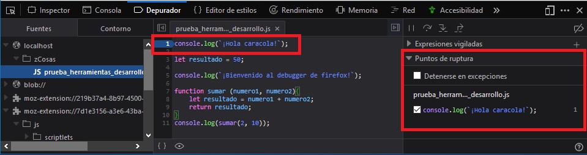

Las herramientas de desarrollo tienen su propio debugger, gracias a él podremos analizar nuestro código paso a paso, permitiéndonos comprender mejor que está ocurriendo en cada momento. Se usa principalmente para encontrar errores o mejorar el funcionamiento de nuestro código.
El debugger se corresponde con la pestaña "Depurador" de las herramientas de desarrollo, a las que accedemos mediante la tecla F12:
Para añadir uno o varios breakpoints y observar el comportamiento del código, sólo debemos hacer click en la línea de código que queremos observar:

Para ir moviéndonos por el debugger, utilizaremos estos botones:

- 1: Pausa y reanuda la ejecución del debugger.
- 2: Se mueve al siguiente paso del código.
- 3: Entra dentro de una función.
- 4: Botón para salir.